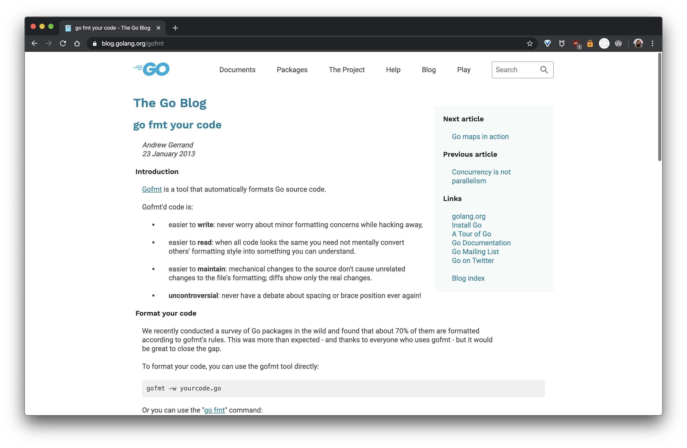

background-image: url('images/peter-gargiulo-cGNCepznaV8-unsplash.jpg') class: center, middle # .off-white[Code Formatting & You] ??? Today, I want to talk about an often overlooked aspect of maintaining a project: How you format your code. --- # Your New Project! ??? There's nothing like the feeling of firing off a new project. I do this all the time. I especally like to do this when I need a sandbox to work in and try things out. --- # The Consistency Problem... * ending files w/ a newline, or not * consistent naming of functions, variables, Classes, and CONSTANTS * enforce an 80 character line limit, or don't * placement of braces (same line, or next line) * tabs v. spaces 😩 ??? When we start a new project, we have a number of decisions to make. First, you have to make decisions on all these, or which code style guide to use. Address code consistency in code review. --- # Code Style Guides ??? pro: decisions are made for you con: you have to pick one Scroll down, there's an article comparing style guides... Just pick one. Don't think too hard about it. --- # Code Review <img src="images/trailing-whitespace-comment.png" width="800"> ??? Do you really want to tell your colleague their indentation is off? That they should name their function `get_value` instead of `getValue`? --- # Linters! ??? Run a command, get feedback. A step in the right direction. --- # Hound https://houndci.com/ ??? Allow me to introduce the most annoying tool I've ever used. There's got to be a better way... --- # Hound https://houndci.com/ --- # Hound https://houndci.com/ ??? --- # go: gofmt  ??? gofmt takes linting a step further, and corrects the problem. Welcome to the future! --- # JavaScript: Prettier --- # Java: Spotless & google-java-format --- # Python, Ruby, etc: pre-commit & a plugin --- class: center, middle # Influence Positive Dialog ??? As a project creator, you have the ability (and responsibility) to influence the dialog in and around your codebase. Make it quality dialog, and don't pick nits. --- class: center, middle  --- class: center, middle # Thanks! radavis.github.io/autoformatting-talk --- class: center, middle # Questions? Comments? ??? What are your experiences with managing code consistency? Were you familiar with code formatters before this talk? Where do you place them in your pipeline?